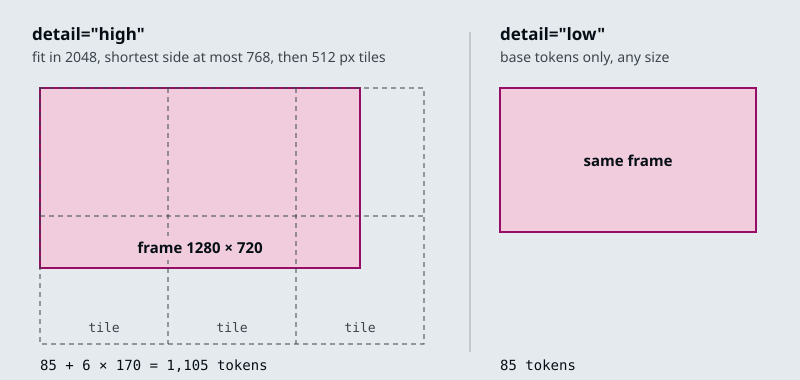

The running example is the Larkspur Cloud handbook from M11 to M13, in the forms a support team holds it: a pricing page as a screenshot, the handbook as a PDF, a recorded support call, and a 90-second screen recording of the data export. The M11 question Can I export my data after I cancel my plan? now has visual evidence as well: the export walkthrough, which the lab samples frame by frame.
TL;DR
- A multimodal request is a list of parts. Gemini takes PIL images inline, and PDFs, audio and video by reference after
genai.upload_file; GPT-4o takesimage_urlparts that hold a public URL or a base64 data URL. - Every part has a price you can compute first. Gemini counts 258 tokens per PDF page and 32 per second of audio.
gpt-4ocounts 85 tokens per image atdetail="low", and 1,105 for a 1280 by 720 frame atdetail="high". - The GPT-4o notebook sends no video file. It samples frames itself and transcribes the soundtrack with
whisper-1, so the sampling gap sets both the cost and what the model can see. - In the lab’s 90-second walkthrough, the notebook’s default gap of 2 s sends 45 frames and misses a 1.2 s toast. A 1 s gap sends 90 frames, 7,650 tokens at low detail, and catches all eight steps.
- A media prompt names what the media holds, what to extract, the output shape, and what to do with anything unreadable (
[NOT_EXTRACTED], “do not make up any information”).
Mental model
flowchart TD
F[/"Media file<br/>image, PDF, audio, video"/] --> D{"Small and<br/>sent once?"}
D -- yes --> I["Inline part<br/>PIL image or base64"]
D -- no --> U["Uploaded file<br/>sent as a handle"]
I --> C["Contents list<br/>media parts and the question"]
U --> C
C --> M["Model turns each<br/>part into tokens"]
M --> A[/Text answer/]
Whatever the provider, the request is a list of parts and the model reads every part as tokens. Decide how each file gets in by its size and by whether you will send it again, then count the tokens before you call: a 10-minute support call is 19,200 tokens before the question is read.
Image prompts
Lesson 6.1: Multimodal prompting with Gemini. Notebooks: 01a_multimodal_google_gemini.ipynb
The notebook loads gemini-2.5-flash through the google-generativeai SDK with temperature=0. Its Markdown cells still say Gemini 1.5 Flash; the code is what runs. An image prompt is a plain Python list: PIL images first, the question last.
image1 = Image.open('image1.png')
image2 = Image.open('image2.png')
prompt = """
Given the following images which can contain graphs, tables and text,
analyze all of them to answer the following question:
Tell me about the top 5 years with largest Wildfires
"""
response = gemini.generate_content([image1, image2, prompt])
The SDK sends the pictures inline with the request; nothing is uploaded first. Three choices in that prompt carry over to any image question:
- It says what the images hold. “Graphs, tables and text” tells the model to read the chart and the table, not to describe the picture.
- It asks for all of them. When the answer spans two pages, the prompt says so.
- It asks one question per call. The notebook asks about the top five years and about the acreage trend in two calls over the same images. The GPT-4o notebook asks both in one call. Separate calls pay for the images twice but are easier to grade one at a time.
For Larkspur, the same shape answers How much outbound traffic does the starter plan include? from a screenshot of the pricing page: the screenshot, then the question, then “If the value is not printed on the page, say so.”
An image can also be the question. The notebook’s last example sends a video, a still image and the prompt “When is the moment in the image happening in the video? Provide a timestamp.” For a support team that is a customer’s screenshot of an error, matched against a recorded walkthrough to find the step they are stuck on.
Images cost tokens like text. The Gemini API documentation (checked October 2026) counts an image of 384 pixels or less on both sides as 258 tokens, and tiles larger images into 768 by 768 tiles of 258 tokens each.
PDF and audio input
PDFs, audio and video go through the File API. genai.upload_file(path=...) uploads the file and returns a handle, and the handle takes the image’s place in the list: contents = [pdf_ref, prompt]. The notebook uploads a Congressional Research Service PDF on wildfire statistics (IF10244.pdf), an interview recording (pixel.mp3) and two videos the same way.
The upload happens once. The notebook reuses one audio handle for three prompts:
sequenceDiagram
participant N as Notebook
participant F as File API
participant G as gemini-2.5-flash
N->>F: upload_file("pixel.mp3")
F-->>N: audio_file handle
N->>G: audio_file + chapter titles prompt
G-->>N: chapters with timestamps
N->>G: audio_file + transcript prompt
G-->>N: speaker-labelled captions
N->>G: audio_file + summary prompt
G-->>N: speakers, products, topics
Each of the three prompts fixes the output shape and limits the model to what is in the recording:
- Chapters: “Provide chapter titles with timestamps, be concise and short”, then “Do not make up any information that is not part of the audio”.
- Transcript: the format
[timecode] - [speaker] : caption, speakers named A, B and so on and mapped to real names at the start, one caption per speaker turn, and only the part of the conversation about the Pixel Watch. - Summary: three headed lists: key speakers, products and features, other notable discussion.
For Larkspur, the transcript prompt turns a recorded support call into turns labelled Customer and Agent. A follow-up question such as “What refund window did the agent quote?” can then be checked against the handbook’s 30 days.
What the File API inputs cost, from the Gemini API documentation (checked October 2026), with Larkspur sizes:
| Input | Gemini rate | Larkspur example | Tokens |
|---|---|---|---|
| 258 per page | 40-page handbook | 10,320 | |
| Audio | 32 per second | 10-minute support call | 19,200 |
Gemini accepts PDFs up to 50 MB or 1,000 pages. A request that sends files inline is capped at 20 MB in total, prompt included; above that, or when the same file serves several prompts, upload it. Video goes in the same way, and Gemini samples it into frames itself; lesson 6.2 shows what that sampling decides.
Check yourself
1. Why does the notebook upload the interview recording through the File API instead of sending it inline with each prompt?
genai.upload_file uploads the file once and returns a handle that takes the image’s place in the contents list, so one handle serves the chapters, transcript and summary prompts. Inline requests are capped at 20 MB in total, prompt included; above that, or when the same file serves several prompts, upload it.
2. How many tokens does Gemini count for the 40-page Larkspur handbook as a PDF, and for a 10-minute support call as audio?
10,320 for the PDF, at 258 tokens per page. 19,200 for the call, at 32 tokens per second over 600 seconds.
3. You want the starter plan's included outbound traffic from a pricing-page screenshot. How do you build the prompt?
Send the screenshot first and the question last, say what the image holds, and add “If the value is not printed on the page, say so.” Ask one question per call: separate calls pay for the image again, but each answer is easier to grade.
Image content parts
Lesson 6.2: Multimodal prompting with GPT-4o. Notebooks: 02a_multimodal_openai_gpt_4o.ipynb (optional)
In the Chat Completions API a user message’s content can be a list of typed parts instead of a string. The notebook mixes one text part and one image part:
{"role": "user", "content": [
{"type": "text", "text": "What's the area of the triangle?"},
{"type": "image_url", "image_url": {"url": f"data:image/png;base64,{base64_image}"}},
]}
The url field takes either of two forms, and the notebook sends the same scanned page both ways:
- A base64 data URL.
encode_image()reads the file from disk and base64-encodes it. Use it for private files, such as a Larkspur customer’s console screenshot. The request carries the bytes, and base64 makes them about a third larger (4 characters for every 3 bytes). - A public
httpsURL. The request stays small, but OpenAI has to fetch the image itself, so it only works for images anyone can reach.
The notebook saves one answer as Markdown. From a scanned page of The Algebra of Mohammed Ben Musa (al-Khwarizmi), the model read the triangle’s sides as 6, 5 and 9 and applied Heron’s formula: semi-perimeter 10, area √200 = 10√2, about 14.14.
The extraction prompts that follow share one shape: a role in the system message, a fixed output format, and an explicit escape for anything the model cannot read.
- Clinical note: a Markdown table
Symptoms | Present/Denies | Probability, acronyms expanded in an appendix table, and “Do not make up terms, if something is not detectable leave it out.” - Handwriting: “Convert the handwritten document into text exactly as in the image”, with
[NOT_EXTRACTED]for any word the model cannot read. - Sales chart: “summarize it briefly, give detailed statistics about the top 3 best performing salesmen”.
Each image part also takes a detail setting, and it sets the price. OpenAI’s images and vision guide gives the rule for gpt-4o: at detail="low" an image costs the base 85 tokens whatever its size. At detail="high" it is scaled to fit 2048 by 2048, its shortest side is scaled down to 768 if longer, and every 512-pixel tile covering the result adds 170 tokens.

So a 1280 by 720 frame costs 1,105 tokens at high and 85 at low, 13 times less. A 1920 by 1080 screenshot also costs 1,105, because it is scaled to 1365 by 768 before tiling. The notebook sends its video frames at detail="low".
Frame sampling
The notebook treats the GPT-4o API as taking text and images only, so a video has to be turned into those first. process_video() does it with OpenCV and moviepy:
frames_to_skip = int(fps * seconds_per_frame)
curr_frame = 0
while curr_frame < total_frames - 1:
video.set(cv2.CAP_PROP_POS_FRAMES, curr_frame)
success, frame = video.read()
_, buffer = cv2.imencode(".jpg", frame)
base64Frames.append(base64.b64encode(buffer).decode("utf-8"))
curr_frame += frames_to_skip
The soundtrack goes to an mp3 at a 32k bitrate and through whisper-1 for a transcript. The notebook then writes three summaries of an OpenAI DevDay recap video: from the frames alone, from the transcript alone, and from both in one message. Its own conclusion is that the combined summary is the most accurate: the frames miss what the speaker says, and the transcript misses what is on screen.
- The Larkspur walkthrough runs 90 s at 30 fps: 2,700 frames.
frames_to_skip = int(30 * 3) = 90, so every 90th frame is read: 30 frames.- Each frame is written as a JPEG and turned into a base64 string.
- moviepy writes the soundtrack to an mp3 at a 32k bitrate.
whisper-1turns the mp3 into transcript text.- One user message carries 30 image parts at low detail and the transcript.
- gpt-4o answers from pictures and words together. The frames cost 30 × 85 = 2,550 tokens.
seconds_per_frame is the setting that matters. It decides how many frames the model reads, so it sets the cost. It also decides which moments the model sees at all: something on screen for less time than the gap between frames may fall between two of them.
The interactive lab runs a port of process_video on a fictional 90-second Larkspur screen recording (30 fps, 1280 by 720) that walks through a data export in eight steps. Two of them are short: a 1.8 s confirm dialog and a 1.2 s “Export ready” toast, the only frame that shows the export finished. Its numbers:
| Gap (s) | Frames | Tokens, low | Tokens, high | Steps seen |
|---|---|---|---|---|
| 1 | 90 | 7,650 | 99,450 | 8 |
| 2, the notebook default | 45 | 3,825 | 49,725 | 7, toast missed |
| 2.5 | 36 | 3,060 | 39,780 | 8 |
| 3, the notebook example | 30 | 2,550 | 33,150 | 7, toast missed |
| 10 | 9 | 765 | 9,945 | 6 |
- Only a gap shorter than the shortest event guarantees a frame on it. The toast lasts 1.2 s, so 1 s is the widest gap in the lab that always catches it. At 2.5 s the frames happen to land on both short steps; if the toast came 1.2 s later, the same gap would miss it.
- Cost grows with the number of frames. Halving the gap doubles the frames and the tokens. High detail multiplies the bill by 13 again.
- The transcript is the other source. A step the narrator mentions survives a missed frame; a silent toast does not.
Gemini takes the video file itself and samples it at 1 frame per second by default; a custom fps can be set in the request. Its documentation warns that “fast action sequences might lose detail due to the 1 FPS sampling rate”. At 1 frame per second the lab’s 1.2 s toast always gets a frame.
process_video has two sharp edges. int(fps * seconds_per_frame) truncates: at 29.97 fps and 3 s the step is 89 frames, so frames come every 2.97 s. And when seconds_per_frame is below one frame’s duration the step is 0 and the while loop never ends; a stubbed run of the notebook’s own function at 0.02 s and 30 fps confirms it. max(1, round(fps * seconds_per_frame)) stops the hang and brings the 29.97 fps gap back to 3.003 s. The import from moviepy.editor import VideoFileClip needs moviepy 1.x, since moviepy 2 removed moviepy.editor; this repo pins moviepy<2 for that reason.
Check yourself
1. When should an image part use a base64 data URL rather than a public https URL?
Use a data URL for private files, such as a Larkspur customer’s console screenshot: the request carries the bytes, about a third larger after base64. A public URL keeps the request small, but OpenAI fetches the image itself, so it works only for images anyone can reach.
2. What does a 1920 by 1080 screenshot cost gpt-4o at detail high, and at detail low?
1,105 tokens at high: it fits within 2048 by 2048, its shortest side is scaled to 768 (giving 1365 by 768), and six 512-pixel tiles cost 85 + 6 × 170. At low it costs the base 85 tokens, 13 times less.
3. At the notebook's default 2-second gap, the lab's frames never show the Export ready toast. Why, and which gap guarantees it?
The toast lasts 1.2 s, shorter than the gap, so it can fall between two frames. Only a gap shorter than the shortest event guarantees a frame on it: 1 s in the lab, at 90 frames and 7,650 tokens at low detail. The 2.5 s gap catches it by luck and would miss it if the toast came 1.2 s later.
Questions about a report page
Lesson 6.3: Exercise: financial report analysis. Notebooks: 03a_financial_report_analysis.ipynb (optional)
The exercise sends two page images from ABN AMRO’s third-quarter 2024 report to gemini-2.5-flash:
Balance_Sheet.png(779 by 597): the condensed statement of financial position at 30 September 2024, 30 June 2024 and 31 December 2023.Figure.png(860 by 1064): “Figures at a glance”, nine bar charts from Q3 2023 to Q3 2024, each bar labelled with its value.
Its prompt asks for a six-part summary: key metrics, income and expenses, balance sheet, credit quality, strategy, outlook. A summary is hard to grade. The module lab brief asks for five questions instead, and five questions with values printed on the page can be graded line by line:
| Question | On the page |
|---|---|
| Net profit in Q3 2024 | EUR 690 million |
| Return on equity in Q3 2024 | 11.6%, target 9 to 10% |
| Cost/income ratio in Q3 2024 | 59.2%, target circa 60% |
| Total assets, 30 September 2024 | 403,771 million |
| Total equity, 30 September 2024 | 25,810 million |
Ask for extraction before interpretation. A prompt that first lists each value with its label, unit and period, then answers from that list, leaves a record you can check against the page. The balance sheet gives you a check for free: total liabilities 377,961 plus total equity 25,810 is 403,771, the printed total assets. Do that sum in code, not in the prompt, and most misread digits in any of the three show up.
flowchart TD
P[/Two page images/] --> X["Extract values<br/>label, unit, period"]
X --> C{"Liabilities + equity<br/>= total assets?"}
C -- yes --> Q["Answer the five questions<br/>from the extracted values"]
C -- no --> R["Re-read the page<br/>or flag for review"]
Two more rules keep the answers honest:
- Read labels, do not measure bars. Every bar on “Figures at a glance” carries its value, so the model reads a number instead of estimating a height. For a chart without labels, ask for the axis range and an estimate, and grade with a tolerance.
- Allow “not on the page”. A question whose answer is not printed should get that answer, not a guess from neighbouring figures.
Sent to gpt-4o at detail="high", each of the two images costs 765 tokens: 2 by 2 tiles of 512 pixels, after Figure.png is scaled to 768 by 950. The same method reads a Larkspur pricing page: extract each plan’s printed figures first, then answer from the extracted list.
Check yourself
1. Why should the prompt extract each value with its label, unit and period before answering the five questions?
Extraction before interpretation leaves a record you can check against the page. It also lets code test the extracted values, such as whether the balance sheet adds up, before any answer is built on them.
2. The model extracts total liabilities of 377,961 million and total equity of 25,810 million at 30 September 2024. What check do you run, and where?
Add them in code, not in the prompt: 377,961 + 25,810 = 403,771, the printed total assets. If the sum does not match, re-read the page or flag it for review; most misread digits in any of the three values show up here.
3. A question asks for a figure the two report pages do not print, and another chart has no value labels. How should each be handled?
The first should get the answer that the figure is not on the page, not a guess from neighbouring figures. For a chart without labels, ask for the axis range and an estimate, and grade the answer with a tolerance.
Interactive lab
Frame sampling: open the file in a browser. Start at the notebook’s default gap of 2 s and find the step no frame lands on. Drop to 1 s to catch all eight steps and read what that costs, then try 2.5 s, which catches all eight by luck. Switch to high detail to see the same frames cost 13 times as much.
How it connects
- Before: M05 taught prompt patterns such as few-shot and chain-of-thought on text; this module sends the same kind of instructions alongside images, documents and sound.
- Next: M07 wraps model calls in LangChain models, prompts and parsers. M12 turns PDFs into text for an index instead of sending the pages to a model, and M21 retrieves images and pages before a multimodal model reads them.
Interview Spotlight: 5 Questions You Might Get Asked
Production questions in the style of OpenAI, Anthropic and Google interviews for applied AI roles.
1. Larkspur summarises recorded export walkthroughs with GPT-4o, sampling a frame every 3 seconds. A customer’s summary says the export “may not have finished”, but the recording shows an “Export ready” toast. What went wrong, and how do you fix it?
What a strong answer covers:
- Lists the timestamps of the frames sent and compares them with when the toast was on screen: a 1.2 s toast and a 3 s gap can miss each other
- States the rule: only a gap shorter than the shortest event you need guarantees a frame on it; 1 s does that here, at 90 frames instead of 30
- Considers cheaper options than a dense gap everywhere: extra frames on scene changes, or relying on the transcript for events the narrator mentions
- Adds the recording to a golden set with the question “Did the export finish?” so the fix is measured
2. The billing team wants answers from the 40-page handbook PDF. One engineer sends the whole PDF to Gemini on every question; another wants to extract the text and use RAG. How do you decide?
What a strong answer covers:
- Prices the first option: 40 pages at 258 tokens is 10,320 tokens on every call, before the question
- Uploads once and reuses the file handle if the whole document is sent, instead of re-sending bytes per call
- Notes what text extraction loses (charts, tables laid out as pictures) and what it gains (citations, smaller prompts, access control per chunk)
- Proposes a measured comparison on the golden questions, and page-level retrieval (M21) as the middle path
3. Support calls are transcribed and summarised with Gemini audio input. How do you measure transcript quality and catch the model putting words in the wrong speaker’s mouth?
What a strong answer covers:
- Builds a small set of calls with human transcripts and measures word error rate and speaker attribution separately
- Checks timestamps against the audio, since chapter titles and captions carry timecodes the prompt asked for
- Spot-checks facts the agent quoted (the 30-day refund window) against the handbook, because a wrong policy in a summary is the costly error
- Tracks cost per call from duration: 32 tokens per second is 1,920 tokens a minute
4. A customer sends a screenshot of the pricing page and asks how much outbound traffic the starter plan includes. The chart on the page has bars but no printed values. What should the assistant do?
What a strong answer covers:
- Separates reading a printed value from estimating a bar height; only the first is an answer to quote
- Tells the model to say when a value is not printed rather than guess from the picture
- Answers from the handbook text instead, where the plan lists its included traffic
- Logs the case so the pricing page gets printed labels, which makes every later screenshot answerable
5. To cut cost, a teammate proposes detail="low" for every customer screenshot sent to gpt-4o. When is that safe?
What a strong answer covers:
- Quotes the difference: 85 tokens against 1,105 for a 1280 by 720 image at high, 13 times less, and the same 85 at any size
- Notes that a 1920 by 1080 screenshot also costs 1,105 at high, because it is scaled to 1365 by 768 first, so size alone does not drive the bill
- Tests both settings on real screenshots for the task that needs small text, such as reading an error code, and keeps high only where low fails
- Redacts secrets before sending, because a base64 image carries everything on the screen to the provider
Key Takeaways
- Treat a multimodal prompt as a list of parts, and say in the text what the parts contain and what to extract from them.
- Price each part before you send it: pages, seconds of audio, frames and image tiles all have published token rates.
- When you sample video yourself, set the gap below the shortest event you need to see, and check what that costs.
- Give the model a way out for unreadable input (
[NOT_EXTRACTED], “not on the page”) and grade answers on questions with known values.